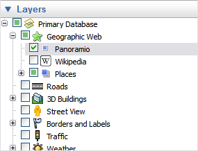

The Layers feature in Google Earth provides a variety of data points of
geographic interest that you can select to display over your viewing area. This includes
points of interest (POIs) as well as map, road, terrain, and even building data. The full
list of layers is available in the Layers panel:

You can use the layer data feature of Google Earth to:
Tip: You can display or hide country, state or province borders by checking or unchecking Borders in the Layers panel.
Layers content is created by Google or its content partners. Google publishes the content you see in the Layers panel.
Information which appears the Places panel, however, can be created by anyone using Google Earth or KML. Learn more about sharing places data.
This section contains tips on using points of interest not covered in Showing and Hiding Points of Interest:
Follow these steps to find a particular point of interest in your viewing region.
Once you locate a POI that you want to save for future Google Earth sessions, you can right click (CTRL click on the Mac) on it and select Save to My Places from the pop-up menu. Alternatively, right-click (CTRL click on the Mac) and select Copy from the pop-up; then paste it over a target folder in the Places panel.
Some points of interest act as a folder that contain categories of data. These are indicated by a plus icon which you can click to view the sub-categories for the item. For example, the Dining layer contains sub-categories of all types of dining, from fast food to seafood. You can turn on restaurant information for a specific type of dining (i.e., seafood only), or you can select the top-level Dining check box to display all Dining types.
When you have a mix of items selected in a category, you can right-click (CTRL click on the Mac) on the parent folder and select Hide Contents from the pop-up menu to quickly hide all elements within the category.
Because Google Earth can deliver hundreds of POIs to a single view, the icons marking them can be modified to make viewing them easier. The most common issues with POI display include:
Try the following to resolve the issue:

©2010 Google - Privacy Policy - Terms and Conditions - About Google
Updated on